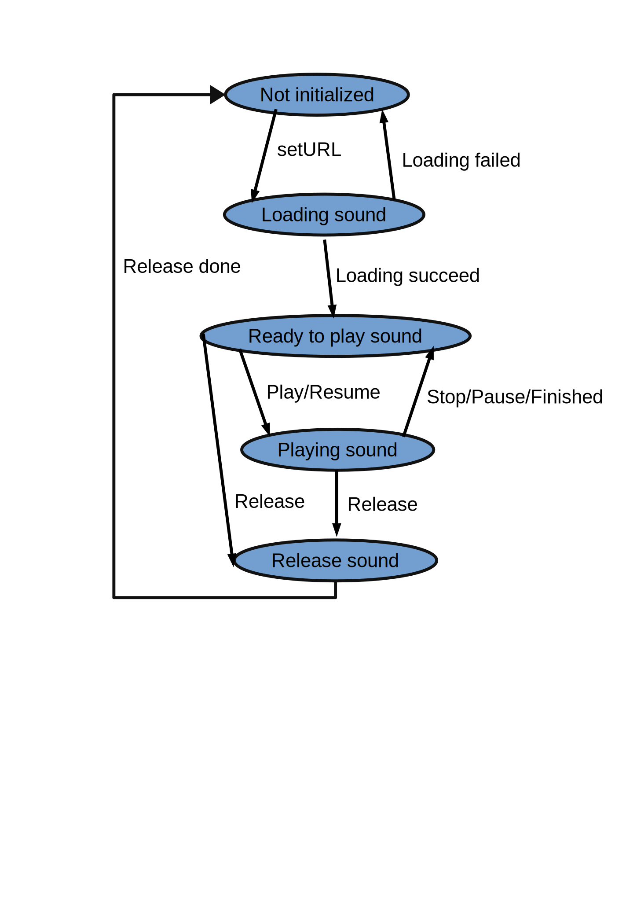

Thread manager
The class jhelp.util.thread.ThreadManager manage a thread pool, and launch tasks in parallel.
To use it just choose the type of task you need to choose the method.
For example for you have a task that computes the Fibonacci's number for a given rank:
package samples.jhelp.util.thread;
import jhelp.util.debug.Debug;
import jhelp.util.thread.Task;
import jhelp.util.thread.TaskException;
public class FibonacciTask implements Task<Integer, Long>
{
public FibonacciTask()
{
}
/**
* Play the task
*
* @param rankValue Fibonacci's number rank
* @return Fibonacci's number
*/
@Override
public Long playTask(final Integer rankValue)
{
int rank = rankValue;
if (rank < 0)
{
throw new IllegalArgumentException("rankValue MUST be >=0 not " + rank);
}
if (rank < 2)
{
return (long) rank;
}
long value = 1;
long first = 0;
long second = 1;
for (; rank > 1; rank--)
{
if (Long.MAX_VALUE - first < second)
{
throw new IllegalArgumentException("rankValue " + rankValue + " is too big !");
}
value = first + second;
first = second;
second = value;
}
return value;
}
/**
* Called if task failed.
* Does nothing by default
*
* @param taskException Task exception
*/
@Override
public void taskError(final TaskException taskException)
{
Debug.exception(taskException, "Issue while computing Fibonacci's number");
}
/**
* Called when result is computed.
* Does nothing by default
*
* @param result Task result
*/
@Override
public void taskResult(final Long result)
{
Debug.verbose("Fibonacci's number is ", result);
}
}
You can then use use it like that:
FibonacciTask fibonacciTask = new FibonacciTask();
ThreadManager.doTask(fibonacciTask, 6);
ThreadManager.doTask(fibonacciTask, 120);
ThreadManager.doTask(fibonacciTask, 12);
ThreadManager.doTask(fibonacciTask, -66);
As you see it is possible to reuse the same instance several times in separate thread in same time.
It is possible, without risk of thread lock, to launch the same task or other task from inside the task code.
With Java schedulers and executors doing this is risk of thread lock.
This issue was the first motivation of the class jhelp.util.thread.ThreadManager.
It is designed to be fair, that is to say it is guarantee there no orphans.
It is compatible with lambdas:
ThreadManager.parallel(() ->
{
//Do something
});
But exceptions inside task will be silently ignored.
In case of task that sure not to fail or have nothing to do on failure it is not a big issue.
Mutex
Let the class:
package samples.jhelp.util.thread;
public class AccountBank
{
private int money;
public AccountBank(int money)
{
this.money = money;
}
public void put(int amount)
{
/*1*/ if (amount <= 0)
{
return;
}
/*2*/ this.money += amount;
}
public int take(int desiredAmount)
{
/*3*/ if (desiredAmount <= 0)
{
return 0;
}
/*4*/ if (this.money < desiredAmount)
{
/*5*/ int give = this.money;
this.money = 0;
return give;
}
/*6*/ this.money -= desiredAmount;
return desiredAmount;
}
}
Imagine now their at least 2 threads that share the same instance of this class.
One off thread (Named threadTake) call the method take and an other thread (Named threadPut) call the method put.
Imagine threadTake get more money that available, so it enters in (5) point.
But native thread management decide now it is turn to threadPut to play, it put its money and then threadTake continue from (5) point.
So what ever the amount threadPut have put, the money will goes to 0.
This dangerous situation can be avoid if we not let takePut put its money until threadTake have finished its task.
To do this it is possible to use create synchronized blocks. It will work in this simple case.
But it become very tricky in more complex situation.
Other solution is to use the mutual exclusive technique (Usually called mutex).
The principe is to decide where is the critical section (Part of code should be called by only one thread,
other threads have to wait their turn until a thread inside critical section.
In our example the critical section have two parts, the code inside take and code inside put.
In java the class java.util.concurrent.Semaphore is dedicated to that:
private final Semaphore mutex = new Semaphore(1, true);
//...
boolean locked = false;
try
{
this.mutex.acquire();
locked = true;
}
catch (Exception exception)
{
Debug.exception(exception, "Failed to acquire the mutex");
}
try
{
//Do operation in critical section
}
finally
{
if (locked)
{
this.mutex.release();
}
}
To avoid to type the try/catch blocks each time, jhelp.util.thread.Mutex simplify the life.
Our example become:
package samples.jhelp.util.thread;
import jhelp.util.thread.Mutex;
public class AccountBank
{
private int money;
private final Mutex mutex;
public AccountBank(int money)
{
this.mutex = new Mutex();
this.money = money;
}
public void put(int amount)
{
this.mutex.playInCriticalSectionVoid(
amount1 ->
{
if (amount1 <= 0)
{
return;
}
this.money += amount1;
},
amount);
}
public int take(int desiredAmount)
{
if (desiredAmount <= 0)
{
return 0;
}
return this.mutex.playInCriticalSection(
amount ->
{
if (this.money < amount)
{
int give = this.money;
this.money = 0;
return give;
}
this.money -= amount;
return amount;
},
desiredAmount);
}
}
Reader writer situation
Imagine you have data and want:
- Have several readers in same time
- Have only one writer at a time
- When come a reader, if their no writer waiting and/or writing it can read, else have to wait writer have finish
- When come a writer if their readers waiting and/or reading or an other writer waiting and/or writing,
it have to wait its turn before writing
In that case the reader/writer algorithm is the solution. To simplify the writing, we create the class jhelp.util.thread.ReaderWriter
package samples.jhelp.util.thread;
import jhelp.util.debug.Debug;
import jhelp.util.math.JHelpRandom;
import jhelp.util.text.UtilText;
import jhelp.util.thread.ConsumerTask;
import jhelp.util.thread.ProducerTask;
import jhelp.util.thread.ReaderWriter;
import jhelp.util.util.Utilities;
public class MainReaderWriter
{
static class Data
{
// data content and operations
}
static void consume(Data data)
{
//Do something with the data
}
public static void main(String[] arguments)
{
ReaderWriter<Data> readerWriter = new ReaderWriter<>(null);
ConsumerTask<Data> consumer = MainReaderWriter::consume;
ProducerTask<Data> producer = MainReaderWriter::produceData;
for (int i = 0; i < 10; i++)
{
for (int j = 0; j < 5; j++)
{
readerWriter.read(consumer);
}
readerWriter.write(producer);
}
}
static Data produceData()
{
// Create some Data instance
}
}
Message handler
A message handler is an object that receive messages from different thread and treat then in order they are received.
The treatment is guarantee to be atomic, that is to say when a message is treat if received message,
the message is enqueued and treat later at its turn.
It is guarantee that each message will be treat in correct order.
To create a message handler, have to extends jhelp.util.thread.MessageHandler.
The method to override is protected abstract void handleMessage(@NotNull M message) to decide how treat a message.
Example of message:
package samples.jhelp.util.thread;
/**
* Message to say where print a message
*/
public class PrintMessage
{
public enum PrintArea
{
TITLE,
INFORMATION
}
public static PrintMessage setInformation(String title)
{
return new PrintMessage(PrintArea.INFORMATION, title);
}
public static PrintMessage setTitle(String title)
{
return new PrintMessage(PrintArea.TITLE, title);
}
private final PrintArea printArea;
private final String text;
PrintMessage(final PrintArea printArea, final String text)
{
this.printArea = printArea;
this.text = text;
}
public PrintArea printArea()
{
return this.printArea;
}
public String text()
{
return this.text;
}
}
The handler that manage these messages:
package samples.jhelp.util.thread;
import jhelp.util.debug.Debug;
import jhelp.util.thread.MessageHandler;
public class PrintMessageHandler extends MessageHandler<PrintMessage>
{
public PrintMessageHandler()
{
}
/**
* Called when a message received and treat it
*
* @param message Received message
*/
@Override
protected void handleMessage(final PrintMessage message)
{
switch (message.printArea())
{
case TITLE:
// print message.text() as title
Debug.mark(message.text());
break;
case INFORMATION:
// print message.text() as information
Debug.information(message.text());
break;
}
}
}
And usage example:
package samples.jhelp.util.thread;
public class MainPrintHandler
{
public static void main(String[] args)
{
PrintMessageHandler printMessageHandler = new PrintMessageHandler();
printMessageHandler.post(PrintMessage.setTitle("Title 1"));
printMessageHandler.post(PrintMessage.setInformation("Info 1"));
printMessageHandler.post(PrintMessage.setTitle("Title in 2 seconds"), 2000);
printMessageHandler.post(PrintMessage.setInformation("Info in 2 seconds"), 2000);
printMessageHandler.post(PrintMessage.setTitle("Title in 1 second"), 1000);
printMessageHandler.post(PrintMessage.setInformation("Info in 1 second"), 1000);
}
}
Post office
In situation on separate elements needs to send messages to each otherjhelp.util.thread.PostOffice may help you.
The principe is having some jhelp.util.thread.User that register to jhelp.util.thread.PostOffice
Each time a User need to contact an other User, it will send message to him throw PostOffice
Inside PostOffice it is possible to create groups to send a message to several Users in same time.
A same user can be in several group, so will receive message for each group it registered.
State machine
A state machine is a object that have states.
For example in a sound player you will have the state: Not initialized, Loading sound, Ready to play sound,
Playing sound, Release sound:

Sound state enumeration:
package samples.jhelp.util.thread;
public enum SoundState
{
NOT_INITIALIZED,
LOADING,
READY,
PLAYING,
RELEASING
}
The state machine:
package samples.jhelp.util.thread;
import jhelp.util.debug.Debug;
import jhelp.util.math.JHelpRandom;
import jhelp.util.thread.ConsumerTask;
import jhelp.util.thread.StateMachine;
public class SoundStateMachine extends StateMachine>SoundState<
{
private String url;
public SoundStateMachine()
{
super(SoundState.NOT_INITIALIZED);
this.register((ConsumerTask>SoundState<) this::loading, SoundState.LOADING);
this.register((ConsumerTask>SoundState<) this::releasing, SoundState.RELEASING);
}
private void loading(SoundState soundState)
{
Debug.verbose("Loading: ", this.url);
if (JHelpRandom.random())
{
this.loadingSucceed();
}
else
{
this.loadingFailed();
}
}
private void loadingFailed()
{
this.changeState(SoundState.NOT_INITIALIZED);
}
private void loadingSucceed()
{
this.changeState(SoundState.READY);
}
private void releasing(SoundState soundState)
{
this.url = null;
this.releasingDone();
}
private void releasingDone()
{
this.changeState(SoundState.NOT_INITIALIZED);
}
/**
* Indicates if it is allow to go from a state to an other state.>br<
* By default all transition are allowed
*
* @param oldState State it leave
* @param newState State want go
* @return {@code true} if it is allow to go from a state to an other state
*/
@Override
public boolean allowedTransition(final SoundState oldState, final SoundState newState)
{
switch (oldState)
{
case NOT_INITIALIZED:
return newState == SoundState.LOADING;
case LOADING:
return newState == SoundState.NOT_INITIALIZED || newState == SoundState.READY;
case READY:
return newState == SoundState.PLAYING || newState == SoundState.RELEASING;
case PLAYING:
return newState == SoundState.READY || newState == SoundState.RELEASING;
case RELEASING:
return newState == SoundState.NOT_INITIALIZED;
default:
throw new RuntimeException("Should never goes here! Not managed state=" + oldState);
}
}
public boolean playResume()
{
return this.changeState(SoundState.PLAYING);
}
public void registerSoundNotInitializedListener(ConsumerTask>SoundState< listener)
{
this.register(listener, SoundState.NOT_INITIALIZED);
}
public void registerSoundPlayingListener(ConsumerTask>SoundState< listener)
{
this.register(listener, SoundState.PLAYING);
}
public void registerSoundReadyListener(ConsumerTask>SoundState< listener)
{
this.register(listener, SoundState.READY);
}
public boolean release()
{
return this.changeState(SoundState.RELEASING);
}
public boolean setURL(String url)
{
this.url = url;
return this.changeState(SoundState.LOADING);
}
public boolean stopPauseFinished()
{
return this.changeState(SoundState.READY);
}
public void unregisterSoundNotInitializedListener(ConsumerTask>SoundState< listener)
{
this.register(listener, SoundState.NOT_INITIALIZED);
}
public void unregisterSoundPlayingListener(ConsumerTask>SoundState< listener)
{
this.unregister(listener, SoundState.PLAYING);
}
public void unregisterSoundReadyListener(ConsumerTask>SoundState< listener)
{
this.unregister(listener, SoundState.READY);
}
}
By default most of methods of jhelp.util.thread.StateMachine are protected.
They aren't exposed by purpose to allow extanded classes to expose only what they need and avoid external doing
mess.
It exists a class that expose all: jhelp.util.thread.SimpleStateMachine, use it if anyone can change the state
without control (Except choose allowed state transition).